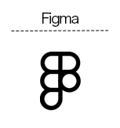
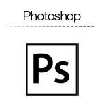
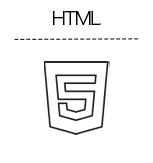
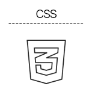
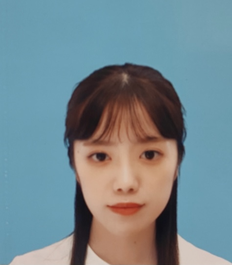

SKILLS
DESIGN


デザインツールは主にFigmaを使用しています。
Photoshop、Adobeの基本操作も可能です。
CODING


模写コーディングにより、HTML・CSSの基礎知識の理解を深めました。
ABOUT

寺崎有香子 (Yukako Terasaki)
1995年：福岡県久留米市出身
2014年：久留米市立南筑高等学校卒業
2016年：福岡大村美容ファッション専門学校
ファッショビジネスコース卒業
アパレル販売員として、接客と、ブログやSNSを更新するプレス業務に2年間従事。
その後、携帯会社のコールセンターにてオペレーター業務を2年半従事。
オペレーター業務では、要望把握から提案、処理までのスピードの速さが評価され、入社後６ヶ月で新人育成業務を任されるようになり、
入社後１年で、センター内＜最優秀評価＞を獲得しました。
相手が求めることを素早く判断し、最善策を提案することが得意です。